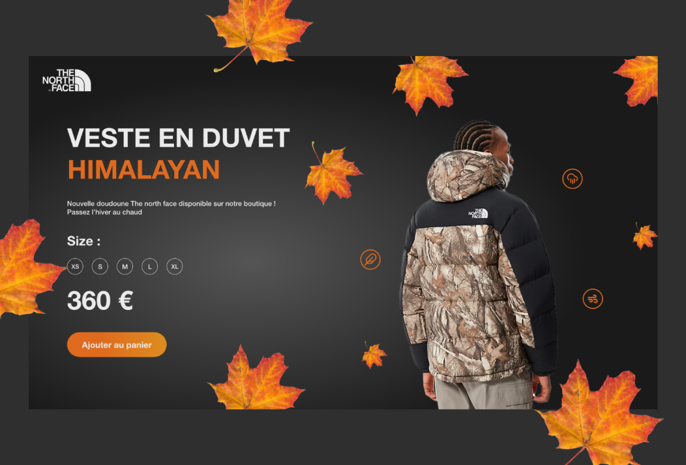
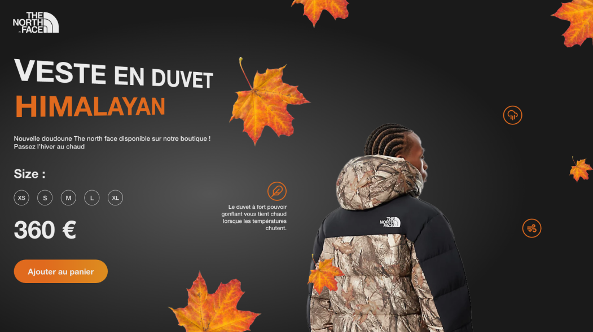

Ce projet a pour but la mise en avant d’une marque et d'un produit lors de sa sortie J’ai choisi un article de la marque The North Face qui me parlait tout en respectant la mise en forme et les informations présentes sur le site original. J’ai utilisé Adobe XD et Photoshop pour cette réalisation. La partie prototypage doit permettre à l’utilisateur de cliquer sur les icônes présents sur la page pour obtenir les informations produit.

01-Homepage-
Ce projet est porté par une animation au click des différentes icônes : la perspective de la page change ainsi que la position des éléments ( les feuilles, le mannequin, le texte ) et un texte apparaît avec les informations produit comme vous pouvez le voir ci dessous.

02-Page "Notre Histoire"-
Voici les 3 icônes qui correspondent aux différentes caractéristiques et informations du produit. Un clic sur ces dernières entraîne un changement de perspective.